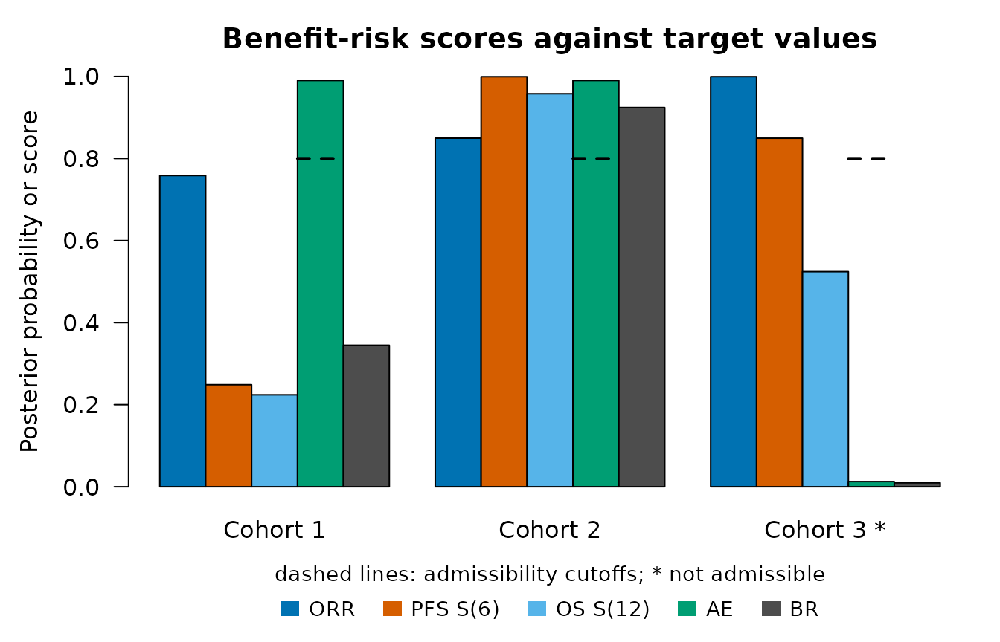
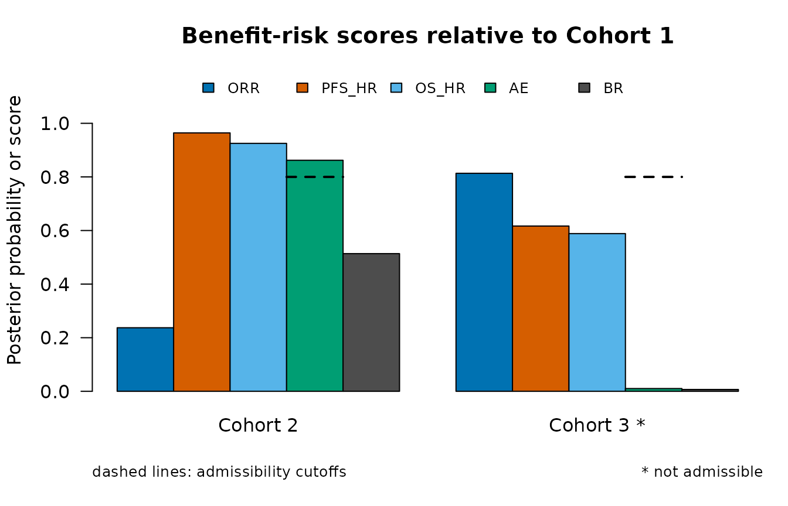
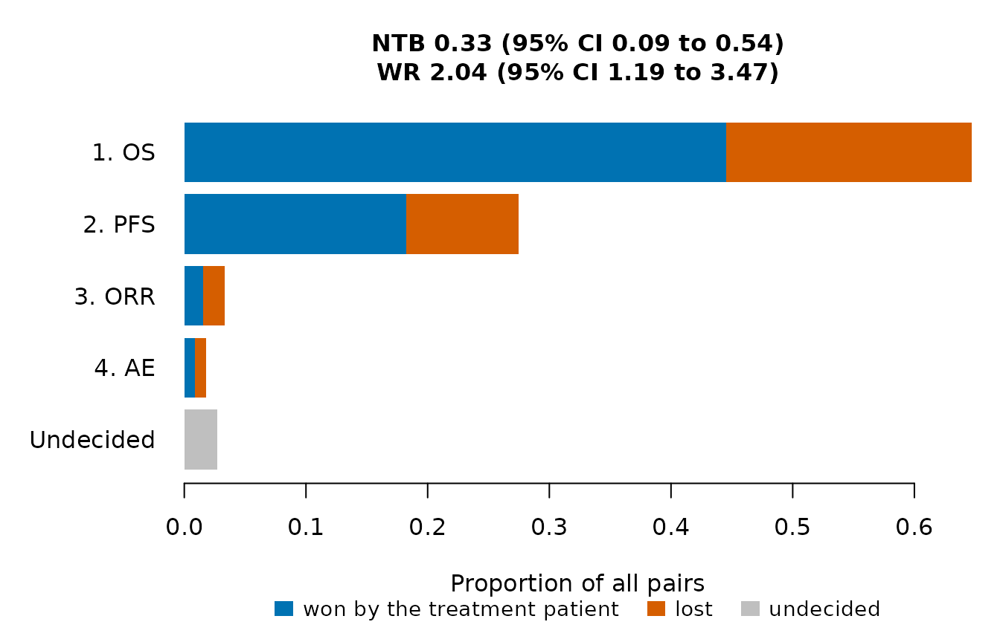
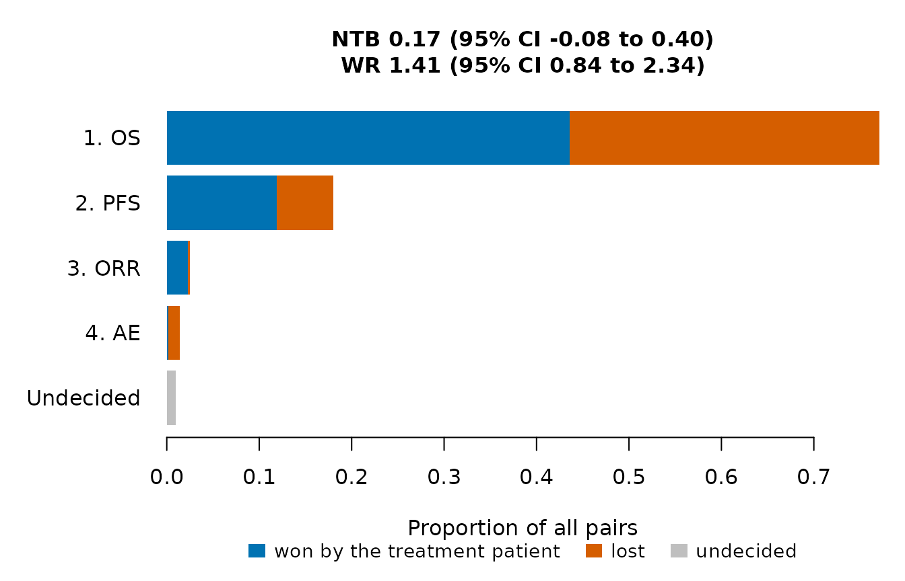

This article analyzes the data of a completed trial with three single-arm cohorts, with column names in the style of ADaM data sets. The data are fictitious and are installed with the package.
Data
The file has one row per patient: the cohort (TRT01P),
the overall and progression-free survival times in months
(OSAVAL, PFSAVAL) with their censoring
indicators (OSCNSR, PFSCNSR; 0 for an event
and 1 for a censored time, as in ADaM), the best overall response
(BOR) and a flag for an adverse event of interest
(AEFL, "Y" or blank).
path <- system.file("extdata", "example_trial.csv", package = "OncoCohortSelect")
adsl <- read.csv(path, stringsAsFactors = FALSE)
head(adsl)
#> USUBJID TRT01P OSAVAL OSCNSR PFSAVAL PFSCNSR BOR AEFL
#> 1 C1-001 Cohort 1 20.60 1 20.60 1 PR
#> 2 C1-002 Cohort 1 22.88 1 10.77 0 PR
#> 3 C1-003 Cohort 1 20.43 1 19.64 0 PR
#> 4 C1-004 Cohort 1 11.87 0 11.87 0 PR
#> 5 C1-005 Cohort 1 23.16 1 16.84 0 SD Y
#> 6 C1-006 Cohort 1 12.31 1 2.98 0 SD
table(adsl$TRT01P, adsl$BOR)
#>
#> CR NE PD PR SD
#> Cohort 1 1 1 7 13 18
#> Cohort 2 3 0 6 12 19
#> Cohort 3 5 0 8 17 10
table(adsl$TRT01P, adsl$AEFL == "Y")
#>
#> FALSE TRUE
#> Cohort 1 31 9
#> Cohort 2 31 9
#> Cohort 3 17 23Endpoints
Endpoint() names the columns of each endpoint. For a
time-to-event endpoint, censor gives a censoring indicator
coded as in ADaM (0 for an event, any other value for a censored time)
and event an event indicator (1 for an event). For a binary
endpoint, positive lists the values that count as 1, here a
complete or partial response and the flag "Y".
eps <- list(
Endpoint("OS", "tte", time = "OSAVAL", censor = "OSCNSR"),
Endpoint("PFS", "tte", time = "PFSAVAL", censor = "PFSCNSR"),
Endpoint("ORR", "binary", var = "BOR", positive = c("CR", "PR")),
Endpoint("AE", "binary", var = "AEFL", positive = "Y", higher.better = FALSE))In ADaM, time-to-event data are usually in a separate data set with
one row per patient and parameter. reshape() puts the
parameters side by side, and merge() adds them to the data
of the patients:
adtte <- data.frame(USUBJID = c("01", "01", "02", "02"),
PARAMCD = c("OS", "PFS", "OS", "PFS"),
AVAL = c(10.2, 5.1, 8.4, 8.4), CNSR = c(1, 0, 0, 0))
reshape(adtte, idvar = "USUBJID", timevar = "PARAMCD", direction = "wide")
#> USUBJID AVAL.OS CNSR.OS AVAL.PFS CNSR.PFS
#> 1 01 10.2 1 5.1 0
#> 3 02 8.4 0 8.4 0The columns AVAL.OS and CNSR.OS are then
given to Endpoint().
Benefit-risk scores
Against target values, with the criteria of the article Evaluating decision rules by simulation:
crit <- data.frame(endpoint = c("ORR", "PFS", "OS", "AE"),
target = c(0.30, 0.50, 0.60, 0.40), time = c(NA, 6, 12, NA),
weight = c(1 / 3, 1 / 3, 1 / 3, 1), cutoff = c(NA, NA, NA, 0.8))
br <- BenefitRisk(adsl, eps, crit, group = "TRT01P")
br
#> Posterior benefit-risk scores against target values
#>
#> component definition weight cutoff
#> ORR P(rate >= 0.3) 0.333
#> PFS_S6 P(S(6) >= 0.5) 0.333
#> OS_S12 P(S(12) >= 0.6) 0.333
#> AE P(rate <= 0.4) 1 0.8
#>
#> group ORR PFS_S6 OS_S12 AE admissible BR selected
#> Cohort 1 0.759 0.249 0.224 0.9901 TRUE 0.3450 FALSE
#> Cohort 2 0.850 0.999 0.958 0.9901 TRUE 0.9241 TRUE
#> Cohort 3 1.000 0.849 0.524 0.0127 FALSE 0.0097 FALSE
#>
#> Selected: Cohort 2
plot(br)
Relative to Cohort 1, the reference regimen:
crit_ref <- data.frame(endpoint = c("ORR", "PFS", "OS", "AE"),
measure = c("rate", "hr", "hr", "rate"),
target = c(0.10, 0.80, 0.90, 0.10),
weight = c(1 / 3, 1 / 3, 1 / 3, 1), cutoff = c(NA, NA, NA, 0.8))
br_ref <- BenefitRisk(adsl, eps, crit_ref, group = "TRT01P", reference = "Cohort 1")
br_ref
#> Posterior benefit-risk scores relative to Cohort 1
#>
#> component definition weight cutoff
#> ORR P(rate - reference rate >= 0.1) 0.333
#> PFS_HR P(HR <= 0.8) 0.333
#> OS_HR P(HR <= 0.9) 0.333
#> AE P(rate - reference rate <= 0.1) 1 0.8
#>
#> group reference ORR PFS_HR OS_HR AE admissible BR
#> Cohort 2 Cohort 1 0.237 0.964 0.925 0.8621 TRUE 0.51373
#> Cohort 3 Cohort 1 0.814 0.617 0.589 0.0103 FALSE 0.00686
plot(br_ref)
Win statistics
Each new cohort is compared with Cohort 1, with priority OS, PFS, response and adverse event.
w2 <- WinStat(adsl, eps, treatment = "Cohort 2", control = "Cohort 1", group = "TRT01P")
w3 <- WinStat(adsl, eps, treatment = "Cohort 3", control = "Cohort 1", group = "TRT01P")
w2
#> Generalized pairwise comparisons: Cohort 2 (treatment) vs Cohort 1 (control)
#> Patients: 40 and 40 (1600 pairs); scoring rule of Gehan
#>
#> Proportions of all pairs won, lost and still undecided by priority level:
#> priority endpoint threshold win loss undecided
#> 1 OS 0 0.44562 0.20125 0.3531
#> 2 PFS 0 0.18250 0.09250 0.0781
#> 3 ORR 0 0.01562 0.01750 0.0450
#> 4 AE 0 0.00875 0.00937 0.0269
#>
#> Pairs won 0.652, lost 0.321, tied 0.0269
#>
#> 95% confidence intervals:
#> statistic estimate se lower upper
#> NTB 0.332 0.118 0.0857 0.54
#> WR 2.035 0.554 1.1940 3.47
#> WO 1.993 0.527 1.1874 3.35
plot(w2)
plot(w3)
The net treatment benefit against Cohort 1 is 0.33 for Cohort 2 and 0.17 for Cohort 3. With the scoring rule of Péron, censored pairs are scored with the Kaplan-Meier estimates:
rbind(
"Cohort 2" = WinStat(adsl, eps, treatment = "Cohort 2", control = "Cohort 1",
group = "TRT01P", scoring = "peron")$estimate,
"Cohort 3" = WinStat(adsl, eps, treatment = "Cohort 3", control = "Cohort 1",
group = "TRT01P", scoring = "peron")$estimate)
#> p_win p_loss p_tie ntb wr wo
#> Cohort 2 0.6273485 0.3676415 0.005010019 0.2597070 1.706414 1.701633
#> Cohort 3 0.5740167 0.4206718 0.005311524 0.1533449 1.364524 1.362237Applying a decision rule
The decision rule and its threshold are fixed when the trial is
designed, for example with CalibrateThreshold() as in the
article Evaluating decision rules by simulation.
SimSelection() computes all the statistics of a completed
trial when the data are treated as one simulated trial, and
SelectionOC() then gives a probability of 1 to the cohort
that the rule selects. The thresholds below are for illustration
only.
adsl$sim <- 1
res <- SimSelection(adsl, eps, crit, reference = "Cohort 1", criteria.ref = crit_ref,
group = "TRT01P")
res[, c("group", "br", "adm", "br_diff", "br_ref", "adm_ref", "ntb", "wr")]
#> group br adm br_diff br_ref adm_ref ntb wr
#> Cohort 1 0.3450 TRUE NA NA NA NA NA
#> Cohort 2 0.9241 TRUE 0.579 0.51373 TRUE 0.332 2.04
#> Cohort 3 0.0097 FALSE -0.335 0.00686 FALSE 0.167 1.41
rules <- data.frame(statistic = c("br_diff", "br_ref", "ntb", "wr"),
threshold = c(0.05, 0.5, 0.1, 1.5))
sel <- vapply(seq_len(nrow(rules)), function(i) {
oc <- SelectionOC(res, rules$statistic[i], threshold = rules$threshold[i])
oc$group[oc$p_select == 1]
}, character(1))
data.frame(rules, selected = sel)
#> statistic threshold selected
#> 1 br_diff 0.05 Cohort 2
#> 2 br_ref 0.50 Cohort 2
#> 3 ntb 0.10 Cohort 2
#> 4 wr 1.50 Cohort 2